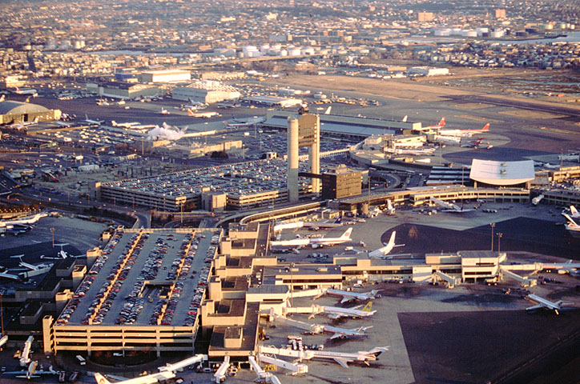
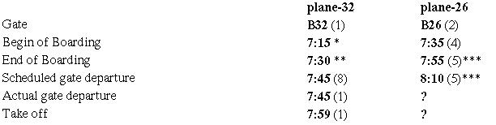
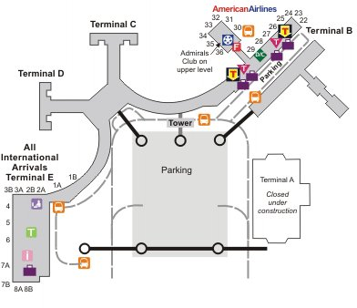
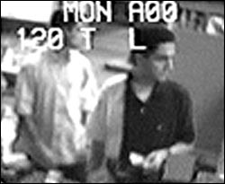
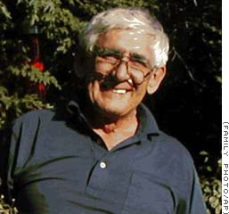
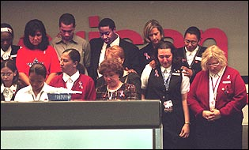

Where did Flight 11 start? Almost everyone knows the answer: this was in Boston. But if you want it a bit more precise and ask for the specific gate the airplane left from, your interview partner most likely will just raise his eyebrows and present a counter-question: "Why do you want to know that?"
This is about to change. On closer inspection, the question for the gate is not trivial at all, but highly intriguing.
This document is encountered by press reports claiming that the passengers of flight 11 embarked on an airplane at Gate 26 (2). This gate is located in another wing of Terminal B and about 1000 ft. away from Gate 32. Gate 26 is the "official version", and apart from one exception, Gate 32 is never mentioned (3). The confusion is completed by the fact that this airplane's departure (which I will name "plane-26" as opposed to "plane-32") was delayed, i.e. it left the gate later than 7:45 a.m (4). This has been confirmed by several witnesses (5). Summarizing the diverse reports and witness statements yields the following double timeline for flight 11:  (x): source x Instead of favoring one of the planes and hopelessly trying to invalidate the evidence for the other one, it's a better idea to get familiar with the thought that there was a plane labeled "flight 11" at both gates (6). The issue in question is the identity of the doomed plane. Plane-32 is the jet that crashed into the WTC North Tower. Its flight path is well documented by the transponder data, the radar data and the radio talk with the controllers, at least up to a few minutes before the crash. But there is no evidence of any people embarking, or intending to embark, on a plane starting at 7:45 from Gate 32, not one report, not one witness. Whereas it's possible that the passengers boarded partly plane-26, partly plane-32, it seems to be far more likely that the irregularity of the two gates is part of a hitherto unknown plan to get control of plane-32 without disturbing passengers or crew members. So in all probability, the plane was "stolen" from the airport by the so-called hijackers, - with no passengers aboard. Perhaps some FBI investigator should browse his filing cabinet for the mysterious "5th flight" shortly emerging in the media after September 11. This transcontinental flight was scheduled to start at 8:10 a.m. in Boston, but it was canceled in the last minutes due to a mechanical defect (9). The flight number 43 turned out to be wrong afterwards, raising the question for the correct number of the canceled flight (10). In any case, the scheduled departure time 8:10 a.m. perfectly fits the boarding time 7:35 a.m. of plane-26 (Spiegel, see (4) ), so it's quite possible that this was the delayed flight 11 at Gate 26. Note that American Airlines used to offer only one transcontinental flight around 8 a.m: flight 11. This article raises many questions but fails to provide the answers. This is not surprising, though, because the author lacks the means to go deeper in his investigation, be it interviewing witnesses or sifting documents. Some questions, however, might be answered quickly if certain important documents are published, for instance the tape corresponding to the radio transcript in the New York Times. The 9/11 commission already has proven its openness to such ideas. Was it really John Ogonowski who was sitting in the cockpit of plane-32 and talking with Ground Controller 1? It is said that Mrs. Ogonowski was never given an opportunity to listen to the tape.
There are two answers: Gate 26 and Gate 32. And both answers resist any attempt to refute them...
Flight 11 was an institution on Logan, Airport, it used to be the American Airlines' early morning transcontinental flight for years. The flight was popular among flight attendants because usually wasn’t full of passengers, sometimes not even half full. Its departure was scheduled regularly for 7:45 a.m. at Terminal B, Gate 32. And so it was on Sept. 11, as this radio transcript shows: "7:45:48 -- Ground Control 1: American eleven heavy boston ground gate thirty two you're going to wait for a Saab to go by then push back" (1).
* No data found; estimated half an hour before scheduled departure
** No data found; estimated quarter an hour before scheduled departure
*** Estimation based on witness statements
Then we must realize the consequences of this surprise with regard to the criminal case of 9/11.

The people most concerned by this are the relatives of the victims of flight 11. They must learn that their husbands, wives, fathers, mothers etc. perhaps did not die in the North Tower. Sadly, there is virtually no hope that they are still alive because we've never heard of them anymore. But as every human being wants to know the place where his loved ones left this earthly world, it's just a matter of time until questions for their real fate will arise.

The FBI and the 9/11 Commission, apparently unaware of the problem, should seriously scrutinize the hypothesis of the "hijacked" planes. If there were no passengers on plane-32, there was no need to hijack it. The pilot's behavior - deviation from course, no reaction to controllers, suspicious cockpit talks - was supposed to PRETEND a hijacking. The resulting question - why did he do that, why did he attract attention so early instead of calmly following his deadly route as long as necessary - lacks an answer yet but constitutes a big challenge to every investigator.
Well, the flight attendants Betty Ong and Amy Sweeney relate a hijacking in their phone calls (7). The problem is that the contents of the calls differ considerably, thereby diminishing their conclusiveness. Mrs. Sweeney, for instance, doesn't mention with one word the mace Mrs. Ong is talking about. Instead, she describes a bomb with yellow wires, and this essential detail does not appear in Ong's call. The two women are seemingly not in contact as they don't exchange information. This is not the right place to discuss the inconsistencies of these two calls, but there are many to detect through careful examination. Therefore the identity of the callers and the authenticity of the calls are highly doubtful, particularly since they are not recorded, apart from the first four minutes of the alleged Ong call. The possibility that the calls came from another person simulating the voices of Mrs. Ong and Mrs. Sweeney with the help of voice-shaping software should not be dismissed flatly. It is known that the hijackers did a lot of test flights. Enough opportunities to record the voice of a flight attendant on a hidden tape. Enough time for a female terrorist to train imitating the captured voices.
Plane-26 is a far better candidate for a hijacking than plane-32 as there were passengers seen waiting in front of Gate 26 (Spiegel, see (2) ). Unfortunately, the only thing we know from this plane is that it was scheduled to depart at some point after 7:45 a.m. Its actual departure time is not known, however, and it's even possible that it didn't start at all. The official database of the Bureau for Transportation Statistics (BTS) doesn't help either. This database contains all domestic flights of the big airlines, but on Sept. 11, flight 11 and its data are missing completely (8).
"7:45:58 -- AAL11: After the Saab cleared to push, and we're gonna need four right today, American eleven heavy."
Sources:
http://www.nytimes.com/2001/10/16/national/...
NY Times (Transcript-Mirror, GFP)
Gate 26 was reported by several newspapers, especially the Boston Globe.
http://www.boston.com/news/packages/underattack/...
http://www.boston.com/news/packages/underattack/...
http://www.washingtonpost.com/ac2/wp-dyn/A38407-2001Sep15
http://www.telegraph.co.uk/news/main.jhtml?xml=/news/2001/09/16/watt16.xml
A few weeks later, Gate 26 is confirmed by a Spiegel team coming to Boston and speaking with eyewitnesses (Spiegel 49/2001, cover story: "Was wirklich geschah" (What really happened) ).
flight11_spiegel911.pdf, p. 37/38 (3,9 MB)
The crucial text passage is repeated in the 9/11 Spiegel book
Aust/Schnibben (Ed.): 11. September - Geschichte eines Terrorangriffs, dtv 2002, p. 43/44.
The exception is the Boston Globe article "Two flights from Logan are hijacked" by Stephen Kurkjian and Raphael Lewis. This is one of the very earliest reports on the attacks, published on Sept. 11. It can be found in the archive and is mirrored here:
http://news.globalfreepress.com/ewing/twoflights_fromboston_cp.html
Quote: "One airport employee, who asked not to be identified, said the American flight left on time from Gate 32 in Terminal B, and that nothing unusual was apparent." One day later, in the Globe article "Crashes in NYC had grim origins at Logan", we read: "The American flight left from Gate 26 in Terminal B, and the United flight from Gate 19 in Terminal C. One airport employee said nothing unusual was apparent when the American flight left." Was this the same employee as the day before?
http://news.globalfreepress.com/ewing/flight11_spiegel911.pdf , p. 37/38
According to Der Spiegel, Gate 26 was opened to the passengers at 7:35. And we learn that flight 11 was 14 minutes late - because the jet lifted off at 7:59, that is 14 minutes after the scheduled departure time. This is nonsense, of course, and you might ask yourself whether these reporters had been coming to Boston by ship because they obviously don't know the difference between gate departure and take off. Anyway, with a boarding time of 7:35 the plane surely left the gate later than 7:45.
Two passengers and one crew member called their spouse before the departure of flight 11:

http://www.cbsnews.com/earlyshow/healthwatch/...
Quote: "(David) Filipov's father Alexander, whom he calls Al, was a passenger on American Airlines, Flight 11, which was the first jet that crashed into the towers. In an ironic twist of fate, he was supposed to be on a Delta flight to Los Angeles but switched to American at the last minute. The last contact Alexander Filipov had with his family was when he called his wife from American Airline's Admiral's lounge at Boston's Logan Airport at 7:45 a.m. " So Mr. Filipov was not aboard plane-32 which was just pushing back from the gate at 7:45. Most likely he was going to take plane-26. Given the time he would need to walk from the club to Gate 26 - at least five minutes, probably more - the boarding was surely possible until at least 7:55.
http://www.chicagotribune.com/news/showcase/...
Quote: "Richard Ross, 58, of Newton Mass., called his wife Tuesday morning to say his plane was leaving a bit late. He was frustrated, concerned about arriving in time for a business meeting in Los Angeles, his son said." So this was a substantial delay, not just five minutes. And obviously Mr. Ross didn't intend to take plane-32 - this plane was right on time.
http://news.globalfreepress.com/ewing/sheehy_ong_2004GFPMirror.html
Quote: "(Amy) Sweeney’s first call from the plane was at 7:11 a.m. on Sept. 11—the only call in which she displayed emotional upset. Flight 11 was delayed, and she seized the few moments to call home in hopes of talking to her 5-year-old daughter, Anna, to say how sorry she was not to be there to put her on the bus to kindergarten." So at 7:11, gate departure and boarding time already were rescheduled, i.e. shifted back by some minutes. And Mrs. Sweeney was likely not calling from plane-32.

This thesis is confirmed by a peculiar scenery taking place one year later. Time: Sept. 11, 2002, 7:55 a.m. Location: Boston, Logan Airport, Terminal B. While Sylvio Amorino mourns calmly in front of Gate 26 in memoriam the victims who left the airport here one year ago, a big memorial service with 200 American Airlines employees is held at Gate 32. How many of the employees were eyewitnesses of the boarding procedure of the last flight 11, and why weren’t any employees with Sylvio Amorino?
http://ledger.southofboston.com/articles/2002/09/11/news/export25738.txt
http://www.boston.com/news/packages/sept11/anniversary/globe_stories/091202_solemn.htm
http://abcnews.go.com/sections/primetime/DailyNews/...
http://edition.cnn.com/2004/US/01/27/911.commis.call/
There is one additional oddity concerning Betty Ong's call. According to Vanessa Minter, the AA employee who has received the call, it commenced "minutes after 8:00 a.m.", lasted nearly 40 minutes and ended at 8:46 a.m. This contradicts other reports that Mrs. Ong rang her up at 8:21:
http://abclocal.go.com/wtvd/news/print_091002_NW_LastCall.html
Why didn't the 9/11 commission invite Mrs. Minter when they were playing the Ong call to the public?
http://www.bts.gov/ntda/oai/index.shtml
http://sydney.indymedia.org/...
The Tribune article is to be found in the archive. A copy is here:
http://www.sun-sentinel.com/news/local/...
The Telegraph is better informed: like flight 11, the destination of the transcontinental flight was Los Angeles.
http://www.telegraph.co.uk/news/main.jhtml?xml=/news/...
http://www.chicagotribune.com/news/nationworld/...
"In fact, the flight under investigation flew out of Newark" writes the Tribune and apologizes for associating flight 43 with Boston; the AA 43 of Newark, however, didn't have a mechanical problem but started on point, so it couldn’t have been the "flight under investigation". Does the Tribune want to spell away the canceled flight?
Copyright (c) February 29, 2004 by Woody Box. The author is a musician and free-lance 9/11 researcher from Germany. Nico Haupt contributed to this report.
(*thx to Michael Kane for further edit)
"Approximate only"
By Woodybox
August 3, 2004
The 9/11 Commission report and the boarding procedure of Flight 11
It was my hope that the final report of the 9/11 Commission would shade some light onto the two departure gates of Flight 11. I have to say that I'm disappointed.
The good news is that the report takes a clear position: Flight 11 pushed back from Gate 32 in Terminal B at 7:40 (Chapter 1, Footnote No. 4, p. 469). The bad news is that it doesn't address Gate 26 and the delayed departure of this Flight 11.
On March 15, 2004, American Airlines responded to a request from the Commission. This response - together with the original AAL records - seems to be the only source for the boarding/departure data of Flight 11. Unfortunately, the boarding times of Flight 11 are "approximate only", as "they indicated that some passengers 'boarded' after the aircraft had pushed back from the gate", which obviously is impossible (Chapter 1, Footnote No. 9, p. 469).
In evaluating the AAL record, the 9/11 Commission has made three serious methodical mistakes.
The boarding times of some passengers are inconciliable with the gate departure time 7:40. Unfortunately, the Commission doesn't consider the possibility that these passengers embarked on a different plane. In the weeks after 9/11, Gate 26 was independently reported by several major newspapers (and nobody was talking about Gate 32). No word about these reports in the whole text, not even an attempt to refute them. This is the first mistake.
Excluding the possibility of a different plane, the Commission has to conclude that the boarding times were not right. But it recoils from saying that they are wrong - understandably, as it is not adequate for such an important investigation to refer to wrong data. Instead, it chooses the term "approximate". This is the second mistake. The boarding time is recorded automatically when a passenger passes a gate. If the recorded boarding time doesn't match the real boarding time, this is no approximation error but a bug of the reader for the boarding cards. Apart from the fact that such a kind of bug is a very rare event, the Commission should have avoided the word "approximate".
Now the Commission didn't cross-check the questionable AAL boarding/departure data with other sources. This is the third mistake. The gate departure of AAL 11 is documented and well-known to the public by the published radio talks during the departure. According to these, Flight 11 pushed back at 7:45, in contradiction to the 7:40 from the AAL record. The Commission has surely access to FAA sources und should have compared and weighed the different versions. Regarding the unreliable "approximate" data from AAL, and keeping in mind that noone has ever objected to the "7:45" to determine a gate departure time of 7:45 seems definitely to be preferable.
It would be very interesting to learn when Al Filipov and Richard Ross boarded the plane. Filipov was sitting in the AA lounge at the airport and rung up his wife at 7:45, and Richard Ross' flight was delayed. I doubt they embarked on a plane before 7:40.
It's my impression that the 9/11 Commission didn't dig deep enough on this issue.